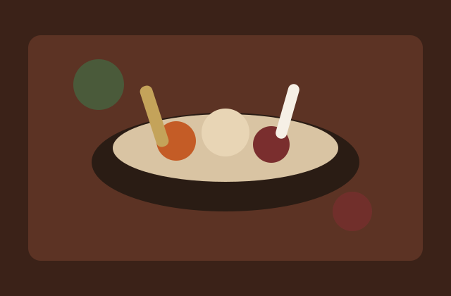
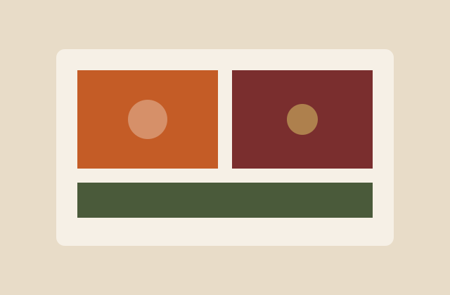

Dirección
Calle Los Jazmines No. 27, Gazcue
Distrito Nacional, Santo Domingo
República Dominicana

Trattoria en el Distrito Nacional
Cocina italiana sencilla, mesa compartida y recetas de casa en Santo Domingo.
Ver menúDe la casa

La casa
Osteria Fiore es una trattoria ficticia imaginada para el Distrito Nacional. El concepto es cocina italiana de casa: pasta, pizza al horno y un menú corto para comer sin prisa.
La propuesta reúne recetas conocidas de Italia con un ambiente cálido, pensado para familias, amigos y visitas en Santo Domingo.
Visítanos
Calle Los Jazmines No. 27, Gazcue
Distrito Nacional, Santo Domingo
República Dominicana
(809) 555-1842
hola@osteriafiore.com
@osteriafiore
facebook.com/osteriafiore